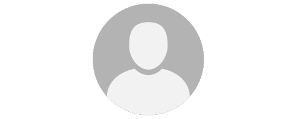

Nome do Usuário
Gerais
Silos
Silo A
Silo B
Sair
Olá usuário, você está vendo as métricas gerais do silo A
Percentual de gás metano atual
0.80
Percentual máximo de gás metano captado
1.20 | 01:00
Percentual mínimo de gás metano captado
0.20 | 12:00